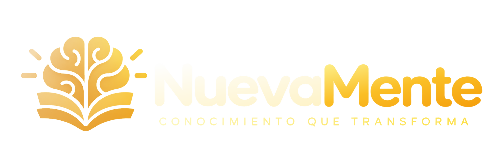

Resumen
Comprender lo esencial

DEMO DAY ONE · ALURA GRUPO 10 / EQUIPO 7 · LATAM01 / DEL DOCUMENTO AL CONOCIMIENTO
Un mismo documento. Diferentes personas. Distintas formas de explicar.
02 / QUÉ TRANSFORMA NUEVAMENTE
Comprender lo esencial
Repasar y memorizar
Comprobar comprensión
Narración + sugerencias visuales
03 / VERLO EN ACCIÓN
Del archivo original
al centro de capacitación.
04 / LO QUE OCURRE DETRÁS
Arquitectura interactiva · clic para explorar
05 / EL EQUIPO · G10-LATAM-Equipo-7
Lideró la planificación, coordinación e integración del equipo, desde la definición del producto hasta el Demo Day.
Lideró la experiencia visual y construyó una interfaz completa, funcional y alineada con el flujo real del producto.
Lideró Data/IA: evaluación de calidad, Ground Truth y métricas de retrieval, impulsando la validación sistemática de resultados.
Fue uno de los principales responsables del BackendAPI: arquitectura, persistencia, integración y orquestación de servicios.
Asumió el servicio de Agentes: generación con IA, recuperación de información y evolución hacia la arquitectura multiagente.
Contribuyó a la evaluación, experimentación y validación de resultados, al análisis de retrieval y al componente evaluador.
Apoyó el frontend y tareas puntuales de integración, aportando funcionalidades y adaptándose a las necesidades técnicas del proyecto.
Contribuyó en tareas concretas de backend e integración, atendiendo requerimientos y apoyando el cierre técnico de funcionalidades.
06 / POR QUÉ IMPORTA
Distintos perfiles.
Cuatro formatos complementarios.
Trazabilidad.
Evaluación independiente y corrección.
Flujo de extremo a extremo.
Regeneración y arquitectura modular.
Frontend · Backend · Agentes · Data/IA · Infraestructura · QA